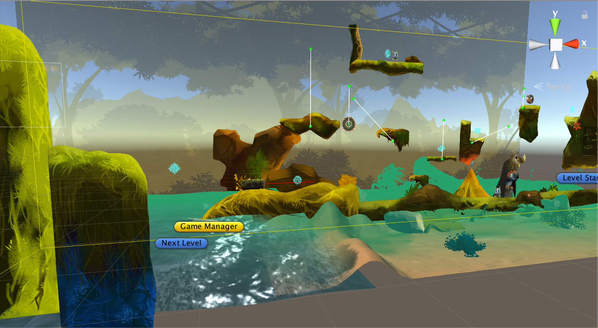
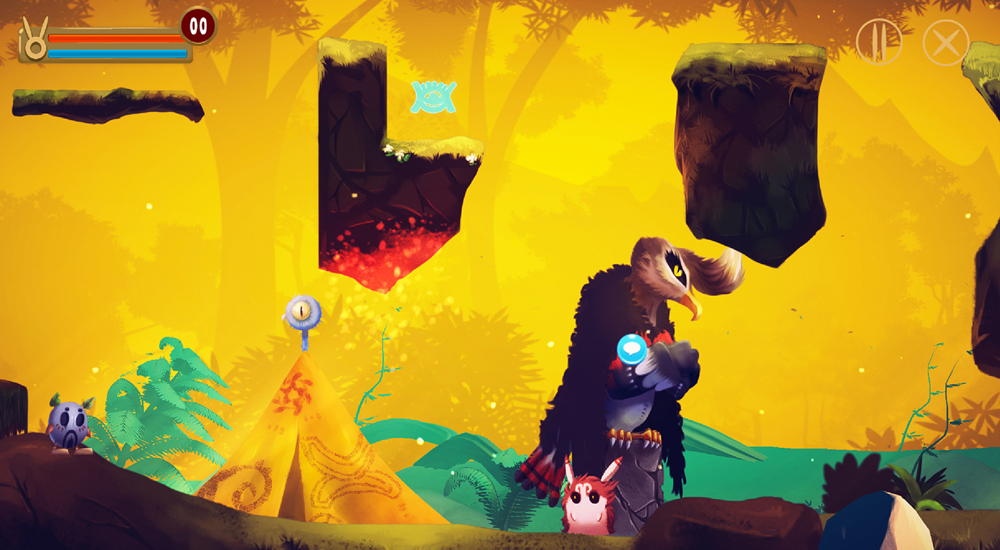
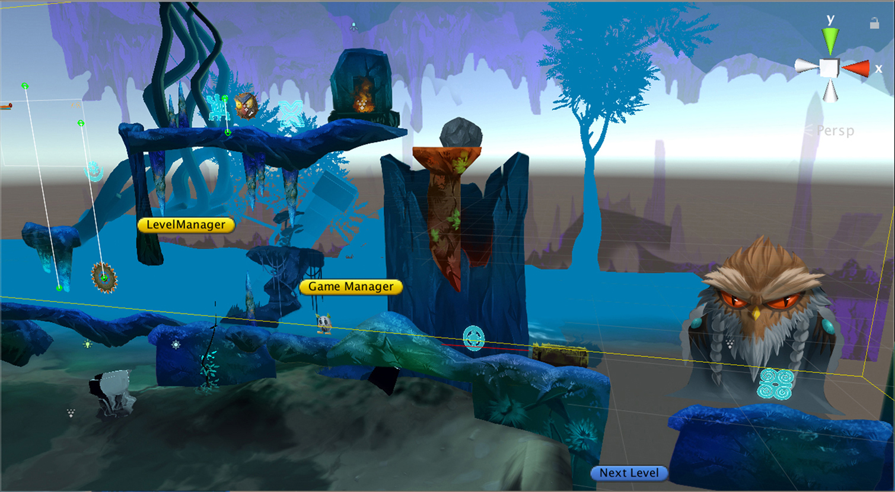
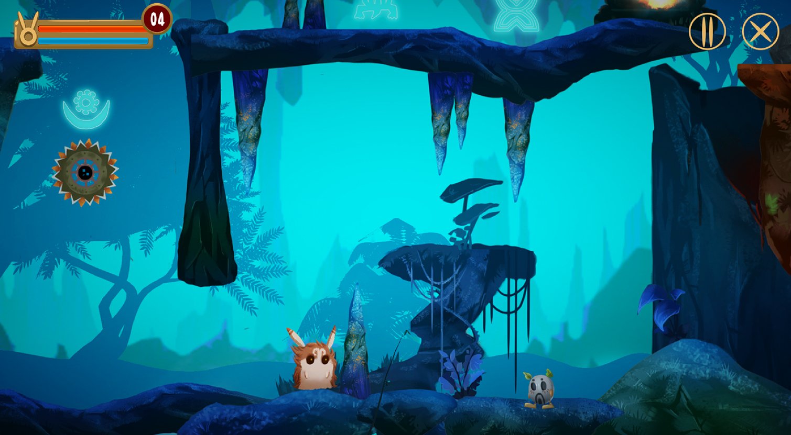
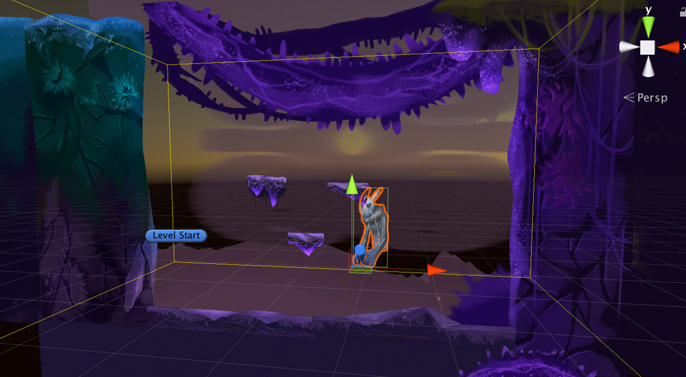
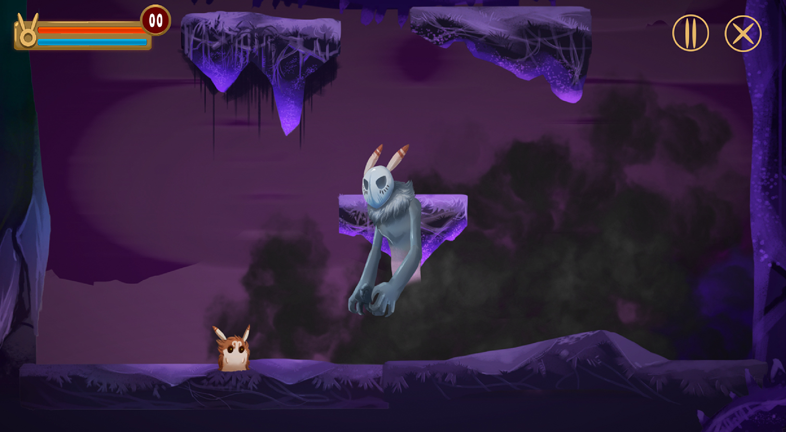
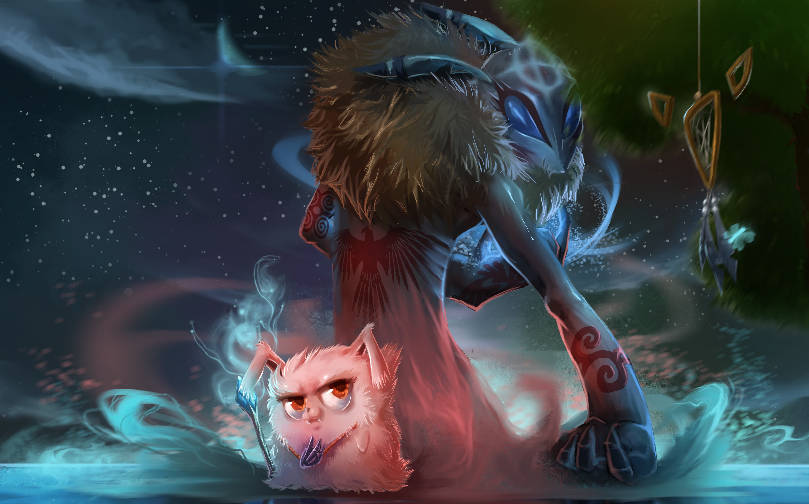

About Kachina
Kachina is a captivating 2D action-adventure game that confronts inner fears. Explore stunning landscapes, battle a reflection of yourself, and uncover ancient mysteries. Officially selected for Siggraph 2017 student work section. A unique blend of action and storytelling. More info from SVA Talent Features .
This game was showcased at the MFACA thesis show in New York in 2017. The documentary film was screened in both New York and Los Angeles as part of Siggraph 2017. Here are some snapshots illustrating users' interactions with Kachina. Players have a deep affection for Kachina the bunny!

This game was created using Unity 3D. The characters are 2D-based and were crafted in Photoshop. All character animations were designed using Spine. To add depth to scenes, multiple layers were employed, each featuring distinct special effects. Additionally, all elements on the map were generated in Photoshop. Separate lighting and particle systems were implemented to enhance the final rendering.






This showcase serves as a captivating journey through the various stages of concept art evolution. It all began with generic characters, gradually evolving into a deeper exploration of the game project's unique essence, featuring an array of captivating NPCs and immersive landscapes. Each iteration delves deeper into the vibrant and distinctive vibe of the envisioned gaming world, portraying a visual narrative that evolves alongside the creative vision.

Kachina Concept Art Selected by Siggraph 2017
Concept design for the thesis project at SVA from 2016 to 2017. This concept art was selected and utilized for ACM Siggraph website.

Character Exploration
The concept design aims to deeply grasp the personalities of the characters and consider the narrative's structure. In addition to outlining the appearance of characters like Kachina and its mentors, their individual personalities are also delineated.


The storyboard acts as a visual blueprint, portraying key characters pivotal to the game's narrative. It serves as a roadmap, meticulously outlining the game's flow from its initial stages to completion. This comprehensive visualization grants a high-level perspective, offering insights into the essential elements and the progression of the game, guiding me through its conceptualization and development phases.